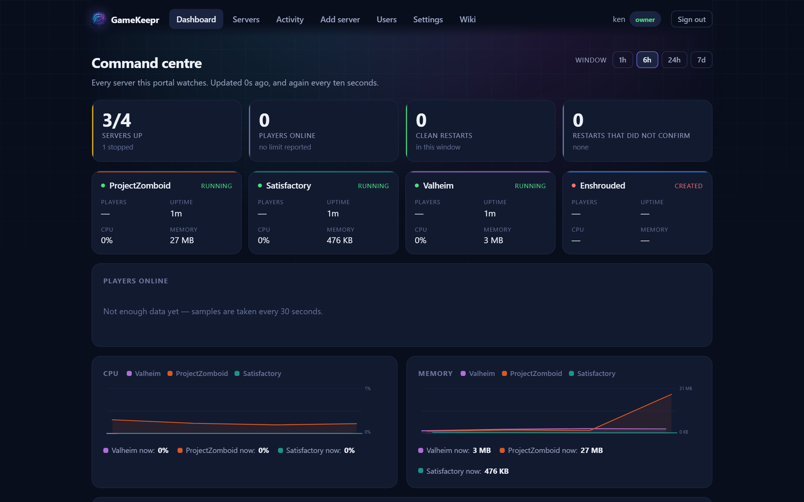

The dashboard

The dashboard is the landing page because it answers the first question anyone opening the portal has: is anything wrong?
The fleet
Every server you may see, with its state at a glance. Running servers sort first. Anything stopped, unhealthy or mid-restart stands out by colour — and if a server the group expects to be up has crashed, GameKeepr's watcher will already have said so on Discord, naming nobody, because nobody did it.
Who is playing
Player names, not just counts, where the game publishes them. "Bart and Arek are on" is the social heartbeat of a friends server; "2 online" is not.
Activity and performance
Recent actions (restarts, starts, stops and who did them) and — for operators — CPU, memory and network charts per server over a chosen window. A memory line that climbs for days and drops at each restart is the classic sign of a game that wants its nightly restart schedule — and with a week of history kept, that multi-day pattern is actually visible.
Two CPU numbers, on purpose: the percentage is of the whole machine (100% means the box has nothing left), and next to it stand the cores in use. The second one matters for games: a single-threaded server pegging one core of sixteen reads 6% machine-wide while being completely CPU-bound — the "1.0 cores" beside it is what says so. Memory follows docker stats: usage without the page cache.